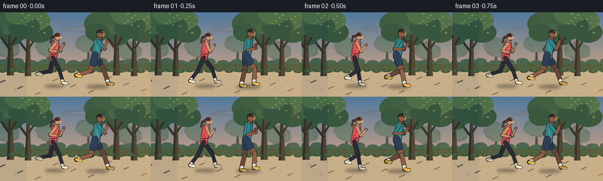
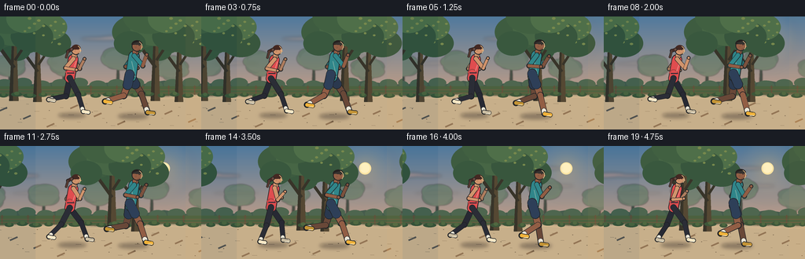
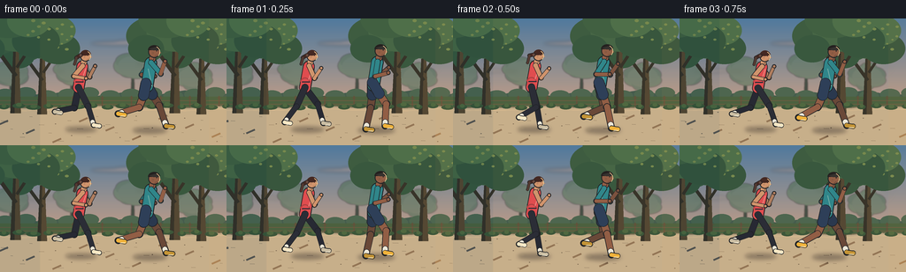

CODING AGENTS AS PIXEL WORLD MODELS
traex/DeepSeek-V4.1-Flash · instance_preservation_0033
点击播放 · 原生 RGB 像素
逐轮保存的候选
回放视频、检查图与代码变化。
每份候选均可单独播放。实际图片检查记录在下方工具轨迹中。
候选 01播放与检查图
点击播放 · 原生 RGB 像素

展开代码变化
--- 上一保存版本
+++ 本次保存版本
@@ -0,0 +1,549 @@
+"""Render a five-second sunrise run with two articulated joggers."""
+
+from __future__ import annotations
+
+import math
+from pathlib import Path
+
+import numpy as np
+from PIL import Image, ImageDraw, ImageFilter
+
+import artifact_io
+
+
+ROOT = Path(__file__).resolve().parent
+W, H = 256, 144
+FPS = 4.0
+FRAMES = 20
+S = 4
+SW, SH = W * S, H * S
+TAU = math.tau
+
+
+def mix(a, b, t):
+ return tuple(round(a[i] + (b[i] - a[i]) * t) for i in range(3))
+
+
+def shade(color, amount):
+ if amount >= 0:
+ return mix(color, (255, 245, 220), amount)
+ return mix(color, (13, 20, 27), -amount)
+
+
+def smoothstep(t):
+ t = max(0.0, min(1.0, t))
+ return t * t * (3.0 - 2.0 * t)
+
+
+def key_curve(u, keys):
+ """Smoothly interpolate a cyclic list of key values."""
+ u %= 1.0
+ n = len(keys)
+ pos = u * n
+ i = int(math.floor(pos))
+ frac = smoothstep(pos - i)
+ return keys[i % n] * (1.0 - frac) + keys[(i + 1) % n] * frac
+
+
+def vertical_gradient(top, bottom, height):
+ rows = np.linspace(0.0, 1.0, height, dtype=np.float32)[:, None]
+ colors = np.asarray(top, dtype=np.float32) * (1.0 - rows) + np.asarray(bottom, dtype=np.float32) * rows
+ return np.repeat(colors[:, None, :], SW, axis=1).astype(np.uint8)
+
+
+def repeating_x(spacing, offset, scroll):
+ phase = (offset - scroll) % spacing
+ first = phase - spacing
+ count = int(math.ceil((SW - first) / spacing)) + 1
+ return [first + i * spacing for i in range(count)]
+
+
+def capsule(draw, p0, p1, width, fill, outline=None, edge=6):
+ x0, y0 = p0
+ x1, y1 = p1
+ radius = width / 2.0
+ if outline is not None:
+ draw.line((x0, y0, x1, y1), fill=outline, width=round(width + edge))
+ draw.ellipse((x0 - radius - edge / 2, y0 - radius - edge / 2,
+ x0 + radius + edge / 2, y0 + radius + edge / 2), fill=outline)
+ draw.ellipse((x1 - radius - edge / 2, y1 - radius - edge / 2,
+ x1 + radius + edge / 2, y1 + radius + edge / 2), fill=outline)
+ draw.line((x0, y0, x1, y1), fill=fill, width=round(width))
+ draw.ellipse((x0 - radius, y0 - radius, x0 + radius, y0 + radius), fill=fill)
+ draw.ellipse((x1 - radius, y1 - radius, x1 + radius, y1 + radius), fill=fill)
+
+
+def limb_joints(phase, runner):
+ """Return thigh/lower-leg angles for a right-facing running cycle."""
+ thigh = key_curve(phase, [0.52, 0.30, -0.05, -0.48, -0.32, 0.18, 0.57, 0.66])
+ knee_flex = key_curve(phase, [0.20, 0.10, 0.05, 0.26, 1.12, 1.32, 0.72, 0.30])
+ lower = thigh - knee_flex
+ return thigh, lower
+
+
+def joint_position(origin, angle, length):
+ return origin[0] + math.sin(angle) * length, origin[1] + math.cos(angle) * length
+
+
+def rotate_about(point, pivot, angle):
+ x, y = point[0] - pivot[0], point[1] - pivot[1]
+ c, s = math.cos(angle), math.sin(angle)
+ return pivot[0] + c * x - s * y, pivot[1] + s * x + c * y
+
+
+class Runner:
+ def __init__(
+ self,
+ name,
+ x,
+ hip_y,
+ scale,
+ period,
+ phase,
+ shirt,
+ lower_wear,
+ skin,
+ hair,
+ shoe,
+ ponytail=False,
+ shorts=False,
+ sleeves=False,
+ ):
+ self.name = name
+ self.x = x
+ self.hip_y = hip_y
+ self.scale = scale
+ self.period = period
+ self.phase = phase
+ self.shirt = shirt
+ self.lower_wear = lower_wear
+ self.skin = skin
+ self.hair = hair
+ self.shoe = shoe
+ self.ponytail = ponytail
+ self.shorts = shorts
+ self.sleeves = sleeves
+ self.outline = (24, 28, 34)
+ self.far_skin = shade(skin, -0.18)
+ self.far_shirt = shade(shirt, -0.18)
+ self.far_lower = shade(lower_wear, -0.18)
+
+ def transform(self, x, y, bob):
+ # The upper body leans forward while the hips remain the pivot.
+ lean = 0.11 if self.name == "woman" else 0.09
+ return self.x + (x - y * lean) * self.scale, self.hip_y + bob + y * self.scale
+
+ def draw_shadow(self, layer, bob, phase):
+ draw = ImageDraw.Draw(layer, "RGBA")
+ stride = abs(math.sin(TAU * phase))
+ cx = self.x + 12 * self.scale
+ cy = 505 + (4 if self.name == "man" else 0)
+ width = (142 + 18 * stride) * self.scale
+ height = (26 + 3 * stride) * self.scale
+ draw.ellipse((cx - width / 2, cy - height / 2, cx + width / 2, cy + height / 2),
+ fill=(33, 29, 31, 92))
+
+ def leg(self, draw, phase, near, bob):
+ thigh_angle, lower_angle = limb_joints(phase, self)
+ hip = self.transform(0, 0, bob)
+ knee = joint_position(hip, thigh_angle, 98 * self.scale)
+ ankle = joint_position(knee, lower_angle, 94 * self.scale)
+
+ leg_color = self.lower_wear if not self.shorts else self.far_skin if not near else self.skin
+ if not near:
+ leg_color = shade(leg_color, -0.18)
+ width = 22 * self.scale if self.name == "woman" else 25 * self.scale
+ capsule(draw, hip, knee, width + 5, leg_color, self.outline, 5)
+ capsule(draw, knee, ankle, width, leg_color, self.outline, 5)
+
+ # A short, light sock separates the leg from each bright running shoe.
+ sock_end = (ankle[0] - math.sin(lower_angle) * 16 * self.scale,
+ ankle[1] - math.cos(lower_angle) * 16 * self.scale)
+ capsule(draw, sock_end, ankle, width * 0.86, (236, 233, 218), self.outline, 4)
+
+ foot_dir = 0.42 if not near else 0.48
+ toe = (ankle[0] + math.cos(foot_dir) * 31 * self.scale,
+ ankle[1] + math.sin(foot_dir) * 11 * self.scale)
+ shoe_color = shade(self.shoe, -0.20) if not near else self.shoe
+ capsule(draw, ankle, toe, 17 * self.scale, shoe_color, self.outline, 5)
+ draw.line((toe[0] - 17 * self.scale, toe[1] + 5 * self.scale,
+ toe[0] + 3 * self.scale, toe[1] + 5 * self.scale),
+ fill=(246, 242, 222), width=max(2, round(3 * self.scale)))
+
+ if self.shorts:
+ short_top = self.transform(-6, -12, bob)
+ short_end = joint_position(hip, thigh_angle, 43 * self.scale)
+ capsule(draw, short_top, short_end, 42 * self.scale,
+ shade(self.lower_wear, -0.18) if not near else self.lower_wear,
+ self.outline, 5)
+
+ return hip, knee, ankle
+
+ def arm(self, draw, phase, near, bob):
+ shoulder = self.transform(4 if not near else 8, -102, bob)
+ # The arm opposes the leg on the same side.
+ upper_angle = -0.72 * math.cos(TAU * phase)
+ if not near:
+ upper_angle *= 0.88
+ elbow = joint_position(shoulder, upper_angle, 64 * self.scale)
+ forearm_angle = upper_angle + 2.08 + 0.08 * math.sin(TAU * phase)
+ hand = joint_position(elbow, forearm_angle, 58 * self.scale)
+
+ base = self.shirt if self.sleeves else self.skin
+ if not near:
+ base = shade(base, -0.20)
+ capsule(draw, shoulder, elbow, 20 * self.scale, base, self.outline, 5)
+ capsule(draw, elbow, hand, 15 * self.scale,
+ self.far_skin if not near else self.skin, self.outline, 4)
+ radius = 8.5 * self.scale
+ draw.ellipse((hand[0] - radius, hand[1] - radius,
+ hand[0] + radius, hand[1] + radius),
+ fill=self.far_skin if not near else self.skin,
+ outline=self.outline, width=max(2, round(3 * self.scale)))
+
+ def torso(self, draw, bob):
+ hip = self.transform(0, 0, bob)
+ chest = self.transform(7, -99, bob)
+ neck = self.transform(12, -118, bob)
+ waist = self.transform(2, -24, bob)
+
+ capsule(draw, hip, chest, 48 * self.scale, self.shirt, self.outline, 7)
+ # Narrow the waist visually and add a shaded back edge.
+ draw.polygon((hip[0] - 18 * self.scale, hip[1],
+ waist[0] - 18 * self.scale, waist[1],
+ chest[0] - 24 * self.scale, chest[1],
+ hip[0] - 15 * self.scale, hip[1]),
+ fill=shade(self.shirt, -0.13))
+ capsule(draw, neck, neck, 25 * self.scale, self.skin, self.outline, 5)
+ capsule(draw, neck, neck, 25 * self.scale, self.skin, None, 0)
+
+ if self.name == "woman":
+ # Cropped coral top and a dark waistband make the silhouette distinct.
+ draw.arc((hip[0] - 27 * self.scale, hip[1] - 47 * self.scale,
+ hip[0] + 27 * self.scale, hip[1] + 15 * self.scale),
+ 202, 338, fill=shade(self.shirt, -0.25), width=5)
+ draw.line((waist[0] - 19 * self.scale, waist[1] - 2 * self.scale,
+ waist[0] + 19 * self.scale, waist[1] - 2 * self.scale),
+ fill=(33, 38, 50), width=max(3, round(5 * self.scale)))
+ # A pale reflective flash on the front of the top.
+ draw.line((chest[0] + 16 * self.scale, chest[1] + 10 * self.scale,
+ waist[0] + 12 * self.scale, waist[1] - 12 * self.scale),
+ fill=shade(self.shirt, 0.35), width=max(2, round(4 * self.scale)))
+ else:
+ # Teal tee with a simple chest stripe.
+ draw.line((chest[0] - 12 * self.scale, chest[1] + 24 * self.scale,
+ waist[0] + 17 * self.scale, waist[1] + 25 * self.scale),
+ fill=shade(self.shirt, 0.32), width=max(2, round(4 * self.scale)))
+ draw.line((hip[0] - 23 * self.scale, hip[1] - 8 * self.scale,
+ hip[0] + 21 * self.scale, hip[1] - 8 * self.scale),
+ fill=(28, 38, 50), width=max(3, round(5 * self.scale)))
+
+ return chest, neck
+
+ def head(self, draw, bob, phase):
+ center = self.transform(17, -148, bob)
+ radius = 25 * self.scale
+ # Neck and face.
+ capsule(draw, self.transform(8, -120, bob), self.transform(12, -135, bob),
+ 18 * self.scale, self.skin, self.outline, 4)
+ draw.ellipse((center[0] - radius, center[1] - radius,
+ center[0] + radius, center[1] + radius),
+ fill=self.skin, outline=self.outline, width=max(2, round(4 * self.scale)))
+
+ # Side-profile nose, chin, ear, and eye.
+ nose = (center[0] + radius * 0.95, center[1] + 2 * self.scale)
+ draw.polygon((nose[0] - 2 * self.scale, nose[1] - 4 * self.scale,
+ nose[0] + 7 * self.scale, nose[1] + 2 * self.scale,
+ nose[0] - 2 * self.scale, nose[1] + 6 * self.scale),
+ fill=shade(self.skin, -0.06))
+ draw.ellipse((center[0] + 9 * self.scale, center[1] - 6 * self.scale,
+ center[0] + 13 * self.scale, center[1] - 2 * self.scale),
+ fill=(29, 30, 33))
+ draw.ellipse((center[0] - 9 * self.scale, center[1] + 1 * self.scale,
+ center[0] - 1 * self.scale, center[1] + 8 * self.scale),
+ fill=shade(self.skin, -0.10))
+ draw.line((center[0] + 12 * self.scale, center[1] + 13 * self.scale,
+ center[0] + 3 * self.scale, center[1] + 18 * self.scale),
+ fill=shade(self.skin, -0.30), width=max(2, round(2.5 * self.scale)))
+
+ hair_color = self.hair
+ if self.ponytail:
+ # Hair cap plus a bouncing ponytail tied at the back.
+ draw.pieslice((center[0] - radius - 2 * self.scale, center[1] - radius - 4 * self.scale,
+ center[0] + radius + 2 * self.scale, center[1] + radius),
+ 182, 346, fill=hair_color)
+ tie = (center[0] - radius * 0.92, center[1] - 5 * self.scale)
+ swing = 5 * self.scale * math.sin(TAU * phase + 0.5)
+ p1 = (tie[0] - 20 * self.scale, tie[1] + 9 * self.scale + swing)
+ p2 = (p1[0] - 9 * self.scale, p1[1] + 32 * self.scale - swing * 0.5)
+ capsule(draw, tie, p1, 15 * self.scale, hair_color, self.outline, 4)
+ capsule(draw, p1, p2, 10 * self.scale, shade(hair_color, 0.08), self.outline, 3)
+ draw.ellipse((tie[0] - 6 * self.scale, tie[1] - 5 * self.scale,
+ tie[0] + 5 * self.scale, tie[1] + 6 * self.scale),
+ fill=shade(hair_color, 0.18))
+ else:
+ # Short cropped hair with a clean forward hairline.
+ draw.pieslice((center[0] - radius - 1 * self.scale, center[1] - radius - 4 * self.scale,
+ center[0] + radius + 1 * self.scale, center[1] + radius * 0.5),
+ 180, 350, fill=hair_color)
+ draw.polygon((center[0] - radius * 0.9, center[1] - radius * 0.55,
+ center[0] + radius * 0.48, center[1] - radius * 0.92,
+ center[0] + radius * 0.92, center[1] - radius * 0.28,
+ center[0] - radius * 0.2, center[1] - radius * 0.28),
+ fill=shade(hair_color, 0.08))
+
+ # Warm sunrise rim on the face and shoulder.
+ draw.arc((center[0] - radius, center[1] - radius,
+ center[0] + radius, center[1] + radius),
+ -64, 44, fill=(255, 217, 156), width=max(2, round(3 * self.scale)))
+
+ def draw(self, image, frame_index):
+ phase = (frame_index / FPS / self.period + self.phase) % 1.0
+ bob = -(3.0 + 5.0 * abs(math.sin(TAU * phase + 0.35))) * self.scale
+
+ draw = ImageDraw.Draw(image, "RGBA")
+ far_phase = (phase + 0.5) % 1.0
+ self.leg(draw, far_phase, False, bob)
+ self.arm(draw, far_phase, False, bob)
+ self.torso(draw, bob)
+ self.leg(draw, phase, True, bob)
+ self.head(draw, bob, phase)
+ self.arm(draw, phase, True, bob)
+
+
+def draw_sun(image):
+ glow = Image.new("RGBA", (SW, SH), (0, 0, 0, 0))
+ gd = ImageDraw.Draw(glow, "RGBA")
+ cx, cy = 833, 114
+ for radius, alpha in ((150, 12), (108, 18), (76, 30), (54, 54)):
+ gd.ellipse((cx - radius, cy - radius, cx + radius, cy + radius),
+ fill=(255, 194, 105, alpha))
+ glow = glow.filter(ImageFilter.GaussianBlur(24))
+ image.alpha_composite(glow)
+ draw = ImageDraw.Draw(image, "RGBA")
+ draw.ellipse((cx - 31, cy - 31, cx + 31, cy + 31), fill=(255, 229, 164, 245))
+ draw.ellipse((cx - 26, cy - 27, cx + 24, cy + 23), fill=(255, 242, 194, 230))
+
+
+def draw_clouds(image):
+ layer = Image.new("RGBA", (SW, SH), (0, 0, 0, 0))
+ draw = ImageDraw.Draw(layer, "RGBA")
+ clouds = [
+ (-30, 143, 255, 28, (244, 166, 141, 90)),
+ (510, 105, 330, 26, (245, 181, 152, 78)),
+ (680, 198, 210, 18, (250, 204, 170, 70)),
+ (120, 235, 190, 14, (249, 216, 183, 56)),
+ ]
+ for x, y, w, h, color in clouds:
+ for dx, dy, ww, hh in ((-0.3, 0, 0.75, 0.65), (0, -0.25, 0.55, 0.8),
+ (0.35, 0.05, 0.55, 0.55)):
+ draw.ellipse((x + dx * w, y + dy * h,
+ x + dx * w + ww * w, y + dy * h + hh * h), fill=color)
+ layer = layer.filter(ImageFilter.GaussianBlur(8))
+ image.alpha_composite(layer)
+
+
+def draw_far_trees(image, scroll):
+ layer = Image.new("RGBA", (SW, SH), (0, 0, 0, 0))
+ draw = ImageDraw.Draw(layer, "RGBA")
+ for idx, x in enumerate(repeating_x(275, 50, scroll * 0.30)):
+ base_y = 363 + (idx % 3) * 4
+ height = 102 + (idx % 4) * 15
+ trunk = shade((66, 80, 70), -0.10)
+ draw.polygon((x - 9, base_y, x + 7, base_y, x + 4, base_y - height,
+ x - 2, base_y - height), fill=trunk)
+ for j in range(6):
+ ang = j * TAU / 6 + idx * 0.7
+ cx = x + math.cos(ang) * 35
+ cy = base_y - height + math.sin(ang) * 25
+ rw = 44 + 8 * ((idx + j) % 3)
+ rh = 31 + 5 * ((idx + 2 * j) % 3)
+ color = (72, 105, 82, 150) if (idx + j) % 2 else (83, 116, 88, 145)
+ draw.ellipse((cx - rw, cy - rh, cx + rw, cy + rh), fill=color)
+ draw.ellipse((x - 67, base_y - height - 46, x + 70, base_y - height + 45),
+ fill=(78, 111, 86, 135))
+ layer = layer.filter(ImageFilter.GaussianBlur(3))
+ image.alpha_composite(layer)
+
+
+def draw_near_tree(image, x, base_y, scale, seed):
+ draw = ImageDraw.Draw(image, "RGBA")
+ trunk_dark = (49, 47, 38)
+ trunk_light = (79, 68, 48)
+ draw.polygon((x - 18 * scale, base_y, x + 19 * scale, base_y,
+ x + 11 * scale, base_y - 222 * scale,
+ x - 7 * scale, base_y - 222 * scale), fill=trunk_dark)
+ draw.polygon((x - 3 * scale, base_y, x + 19 * scale, base_y,
+ x + 11 * scale, base_y - 218 * scale,
+ x + 1 * scale, base_y - 218 * scale), fill=trunk_light)
+ draw.line((x + 2 * scale, base_y - 130 * scale,
+ x - 55 * scale, base_y - 208 * scale), fill=trunk_dark,
+ width=round(13 * scale))
+ draw.line((x + 5 * scale, base_y - 160 * scale,
+ x + 58 * scale, base_y - 240 * scale), fill=trunk_dark,
+ width=round(11 * scale))
+
+ canopy = [
+ (-72, -270, 94, 67, (55, 88, 62)),
+ (2, -287, 102, 72, (64, 99, 67)),
+ (66, -253, 83, 60, (49, 82, 59)),
+ (-29, -329, 100, 66, (58, 92, 63)),
+ (48, -323, 76, 57, (72, 108, 71)),
+ (-95, -225, 62, 48, (50, 84, 60)),
+ ]
+ for i, (dx, dy, rw, rh, color) in enumerate(canopy):
+ wobble = 5 * math.sin(seed * 1.7 + i)
+ draw.ellipse((x + (dx - rw + wobble) * scale, base_y + (dy - rh) * scale,
+ x + (dx + rw + wobble) * scale, base_y + (dy + rh) * scale),
+ fill=(*color, 248))
+ # Sparse sunlit leaves on the right side of the crown.
+ for i in range(11):
+ lx = x + (38 + (i * 37 + seed * 19) % 92) * scale
+ ly = base_y - (245 + (i * 29 + seed * 13) % 108) * scale
+ r = (4 + i % 4) * scale
+ draw.ellipse((lx - r, ly - r * 0.7, lx + r, ly + r * 0.7),
+ fill=(112, 134, 75, 190))
+
+
+def draw_background(frame_index, scroll):
+ sky = vertical_gradient((74, 119, 158), (245, 174, 126), 365)
+ image = Image.fromarray(sky, "RGB").convert("RGBA")
+ image = image.resize((SW, SH), Image.Resampling.BILINEAR)
+
+ # A faint warm haze and long sunrise cloud bands.
+ draw_sun(image)
+ draw_clouds(image)
+ draw_far_trees(image, scroll)
+
+ draw = ImageDraw.Draw(image, "RGBA")
+ # Distant low hills and a ribbon of tree cover.
+ draw.polygon((0, 352, 95, 329, 190, 350, 310, 327, 440, 351,
+ 585, 331, 700, 348, 835, 326, 970, 349, 1024, 341,
+ 1024, 389, 0, 389), fill=(63, 88, 75, 235))
+ for i, x in enumerate(repeating_x(95, 20, scroll * 0.22)):
+ y = 354 - (i % 3) * 7
+ draw.ellipse((x - 42, y - 28, x + 47, y + 23), fill=(70, 98, 77, 210))
+
+ # Grass and path share the foreground; the path edge drifts with parallax.
+ grass_top = 355
+ draw.rectangle((0, grass_top, SW, SH), fill=(69, 94, 61, 255))
+ draw.polygon((0, 404, 0, SH, SW, SH, SW, 404), fill=(62, 85, 57, 255))
+ path_top = 400
+ edge = []
+ for x in range(0, SW + 20, 20):
+ y = path_top + 4 * math.sin((x + scroll * 0.75) / 96) + 2 * math.sin((x + scroll) / 41)
+ edge.append((x, y))
+ path_poly = edge + [(SW, SH), (0, SH)]
+ draw.polygon(path_poly, fill=(184, 163, 132, 255))
+ # Sunlit path crown and cooler path edge.
+ draw.polygon([(x, y + 8) for x, y in edge] + [(SW, SH), (0, SH)],
+ fill=(197, 174, 139, 235))
+ draw.line([(x, y) for x, y in edge], fill=(107, 103, 76), width=6)
+ draw.line([(x, y + 15) for x, y in edge], fill=(215, 185, 143), width=3)
+
+ # Path grain, stones, and long morning shadows.
+ for i, x in enumerate(repeating_x(43, 5, scroll * 0.9)):
+ y = 427 + (i * 37) % 130
+ length = 7 + (i * 11) % 20
+ alpha = 35 + (i * 7) % 35
+ draw.line((x, y, x + length, y + 1), fill=(105, 92, 75, alpha), width=2)
+ for i, x in enumerate(repeating_x(73, 29, scroll * 0.82)):
+ y = 415 + (i * 53) % 150
+ draw.ellipse((x, y, x + 5, y + 3), fill=(112, 99, 80, 65))
+ for i, x in enumerate(repeating_x(120, 35, scroll * 0.9)):
+ y = 423 + (i * 41) % 135
+ draw.line((x, y, x - 38, y + 17), fill=(105, 89, 71, 24), width=8)
+
+ # A few slim fence posts in the mid-ground help the camera motion read.
+ for i, x in enumerate(repeating_x(132, 66, scroll * 0.55)):
+ draw.rectangle((x - 3, 352, x + 3, 398), fill=(91, 77, 56, 210))
+ draw.line((x - 10, 361, x + 10, 361), fill=(91, 77, 56, 210), width=3)
+ draw.line((0, 373, SW, 373), fill=(103, 86, 61, 160), width=3)
+ draw.line((0, 389, SW, 389), fill=(103, 86, 61, 160), width=3)
+
+ # Near trees sit behind the runners and move fastest.
+ tree_specs = [(190, 435, 1.18, 2), (790, 430, 1.30, 7)]
+ for base_x, base_y, scale, seed in tree_specs:
+ for x in repeating_x(720, base_x, scroll * 0.65):
+ if -240 < x < SW + 240:
+ draw_near_tree(image, x, base_y, scale, seed)
+
+ # Low shrubs along the grass strip.
+ for i, x in enumerate(repeating_x(67, 17, scroll * 0.7)):
+ y = 395 + (i * 7) % 12
+ rw = 18 + (i * 5) % 16
+ draw.ellipse((x - rw, y - 11, x + rw, y + 10), fill=(53, 82, 54, 235))
+ draw.ellipse((x - rw * 0.4, y - 14, x + rw * 0.5, y + 3), fill=(72, 100, 61, 200))
+
+ return image
+
+
+def draw_dust(image, runner, frame_index):
+ phase = (frame_index / FPS / runner.period + runner.phase) % 1.0
+ layer = Image.new("RGBA", (SW, SH), (0, 0, 0, 0))
+ draw = ImageDraw.Draw(layer, "RGBA")
+ # Two faint puffs trail each footfall.
+ for offset in (0.0, 0.5):
+ local = (phase + offset) % 1.0
+ strength = max(0.0, math.cos(TAU * (local - 0.05)))
+ if strength > 0.35:
+ cx = runner.x - 24 * runner.scale - strength * 22 * runner.scale
+ cy = 500 + (5 if runner.name == "man" else 0)
+ for j in range(3):
+ r = (6 + j * 4) * runner.scale
+ draw.ellipse((cx - r, cy - r * 0.45, cx + r, cy + r * 0.45),
+ fill=(214, 190, 151, round(26 * strength)))
+ layer = layer.filter(ImageFilter.GaussianBlur(5))
+ image.alpha_composite(layer)
+
+
+def add_atmosphere(image, frame_index):
+ # Very subtle warm light wash and a cool edge vignette.
+ overlay = Image.new("RGBA", (SW, SH), (0, 0, 0, 0))
+ draw = ImageDraw.Draw(overlay, "RGBA")
+ draw.rectangle((0, 0, SW, SH), fill=(255, 190, 122, 9))
+ draw.rectangle((0, 0, 180, SH), fill=(37, 69, 91, 14))
+ draw.rectangle((SW - 80, 0, SW, SH), fill=(255, 183, 104, 18))
+ image.alpha_composite(overlay)
+
+
+def render_frame(frame_index):
+ scroll = frame_index * 31.0
+ image = draw_background(frame_index, scroll)
+
+ shadows = Image.new("RGBA", (SW, SH), (0, 0, 0, 0))
+ woman = Runner(
+ "woman", 360, 316, 0.96, 0.82, 0.04,
+ shirt=(223, 73, 77), lower_wear=(35, 40, 52), skin=(207, 146, 108),
+ hair=(61, 35, 31), shoe=(248, 232, 199), ponytail=True, sleeves=False,
+ )
+ man = Runner(
+ "man", 650, 308, 1.05, 0.77, 0.46,
+ shirt=(40, 132, 139), lower_wear=(38, 58, 87), skin=(142, 91, 67),
+ hair=(28, 26, 28), shoe=(239, 178, 57), shorts=True, sleeves=True,
+ )
+ for runner in (woman, man):
+ phase = (frame_index / FPS / runner.period + runner.phase) % 1.0
+ bob = -(3.0 + 5.0 * abs(math.sin(TAU * phase + 0.35))) * runner.scale
+ runner.draw_shadow(shadows, bob, phase)
+ shadows = shadows.filter(ImageFilter.GaussianBlur(9))
+ image.alpha_composite(shadows)
+
+ woman.draw(image, frame_index)
+ man.draw(image, frame_index)
+ draw_dust(image, woman, frame_index)
+ draw_dust(image, man, frame_index)
+
+ add_atmosphere(image, frame_index)
+ image = image.convert("RGB").resize((W, H), Image.Resampling.LANCZOS)
+ frame = np.asarray(image, dtype=np.uint8)
+ return frame
+
+
+def main():
+ frames = np.stack([render_frame(i) for i in range(FRAMES)])
+ artifact_io.save(frames, ROOT)
+
+
+if __name__ == "__main__":
+ main()
候选 02播放与检查图
点击播放 · 原生 RGB 像素


展开代码变化
--- 上一保存版本
+++ 本次保存版本
@@ -407,7 +407,7 @@
def draw_background(frame_index, scroll):
sky = vertical_gradient((74, 119, 158), (245, 174, 126), 365)
- image = Image.fromarray(sky, "RGB").convert("RGBA")
+ image = Image.fromarray(sky).convert("RGBA")
image = image.resize((SW, SH), Image.Resampling.BILINEAR)
# A faint warm haze and long sunrise cloud bands.
@@ -513,12 +513,12 @@
shadows = Image.new("RGBA", (SW, SH), (0, 0, 0, 0))
woman = Runner(
- "woman", 360, 316, 0.96, 0.82, 0.04,
+ "woman", 355, 319, 0.96, 0.82, 0.04,
shirt=(223, 73, 77), lower_wear=(35, 40, 52), skin=(207, 146, 108),
hair=(61, 35, 31), shoe=(248, 232, 199), ponytail=True, sleeves=False,
)
man = Runner(
- "man", 650, 308, 1.05, 0.77, 0.46,
+ "man", 665, 311, 1.05, 0.77, 0.46,
shirt=(40, 132, 139), lower_wear=(38, 58, 87), skin=(142, 91, 67),
hair=(28, 26, 28), shoe=(239, 178, 57), shorts=True, sleeves=True,
)
可观测工具轨迹
实际执行的命令与返回图片。
命令 1exit 0
/bin/bash -c "pwd && rg --files -g 'prompt.txt' -g 'GENERATION_RULES.md' -g 'task_spec.json' -g '"'!**/.git/**'"'"
命令 2exit 0
/bin/bash -c "find . -maxdepth 2 -type f -not -path './.git/*' -printf '%p %s bytes\\n' | sort | head -200"
命令 3exit 0
/bin/bash -c 'git status --short --branch'
命令 4exit 0
/bin/bash -c 'cat prompt.txt'
命令 5exit 0
/bin/bash -c 'cat GENERATION_RULES.md'
命令 6exit 0
/bin/bash -c 'cat task_spec.json'
命令 7exit 0
/bin/bash -c "sed -n '1,240p' artifact_io.py"
命令 8exit 0
/bin/bash -c "sed -n '1,260p' player_template.html"
命令 9exit 0
/bin/bash -c 'python generate.py'
命令 10exit 0
/bin/bash -c "python - <<'PY'
from PIL import Image
im=Image.open('inspection.png')
print(im.size)
im.resize((im.width*2, im.height*2), Image.Resampling.NEAREST).save('.tmp/inspection_2x.png')
PY"命令 11exit 0
/bin/bash -c 'command -v chafa || true; command -v viu || true; command -v jp2 || true; command -v ffmpeg || true'
命令 12exit 0
/bin/bash -c "python - <<'PY'
from PIL import Image
im=Image.open('frames/00.png').convert('RGB')
print(im.size)
# ANSI truecolor half-block preview, two source rows per terminal row.
for y in range(0, im.height, 2):
line=[]
for x in range(im.width):
r1,g1,b1=im.getpixel((x,y))
r2,g2,b2=im.getpixel((x,min(y+1,im.height-1)))
line.append(f'\\x1b[38;2;{r1};{g1};{b1}m\\x1b[48;2;{r2};{g2};{b2}mâ')
print(''.join(line)+'\\x1b[0m')
PY"命令 13exit 0
/bin/bash -c "python - <<'PY'
from PIL import Image
import numpy as np
for i in [0,4,8,12,16,19]:
im=np.asarray(Image.open(f'frames/{i:02d}.png'))
print(i, 'mean', im.mean((0,1)).round(1), 'unique', len(np.unique(im.reshape(-1,3), axis=0)))
PY"命令 14exit 0
/bin/bash -c "python - <<'PY'
from PIL import Image
# Build a compact grayscale/luminance preview with ANSI backgrounds only.
im=Image.open('frames/00.png').convert('RGB')
chars=' .,:;irsXA253hMHGS#9B&@'
for y in range(0,144,2):
row=''
for x in range(256):
r,g,b=im.getpixel((x,y)); v=(r*3+g*6+b)//10
row += chars[min(len(chars)-1,v*len(chars)//256)]
print(row)
PY"命令 15exit 0
/bin/bash -c "python - <<'PY'
from PIL import Image
import numpy as np
for f in range(20):
a=np.asarray(Image.open(f'frames/{f:02d}.png')).astype(int)
# coral and teal clothing masks
coral=(a[:,:,0]>150)&(a[:,:,0]>a[:,:,1]*1.5)&(a[:,:,0]>a[:,:,2]*1.25)
teal=(a[:,:,1]>70)&(a[:,:,1]>a[:,:,0]*1.3)&(a[:,:,2]>a[:,:,0]*1.15)
for name,m in [('coral',coral),('teal',teal)]:
ys,xs=np.nonzero(m)
print(f, name, (xs.min(),ys.min(),xs.max(),ys.max()) if len(xs) else None, len(xs))
PY"命令 16exit 0
/bin/bash -c "python - <<'PY'
from PIL import Image
import numpy as np
palette={
'c':(223,73,77),'t':(40,132,139),'s':(207,146,108),'S':(142,91,67),
'p':(35,40,52),'P':(38,58,87),'h':(61,35,31),'H':(28,26,28),
'o':(24,28,34),'w':(244,232,199),'y':(239,178,57),'g':(199,175,138),
'r':(70,105,70),'k':(240,195,160)
}
keys=list(palette); cols=np.array([palette[k] for k in keys])
for fi in [0,4,8,12,16]:
a=np.asarray(Image.open(f'frames/{fi:02d}.png')).astype(np.int16)
print('\\nFRAME',fi)
for label,(x0,x1) in [('woman',(50,135)),('man',(130,225))]:
print(label)
crop=a[28:130,x0:x1]
# nearest palette classification, blank far background pixels
d=((crop[:,:,None,:]-cols[None,None,:,:])**2).sum(3)
idx=d.argmin(2); dist=d.min(2)
for y in range(0,crop.shape[0],2):
line=''
for x in range(0,crop.shape[1],2):
block=dist[y:y+2,x:x+2]
ii=idx[y:y+2,x:x+2]
flat=ii.reshape(-1); dd=block.reshape(-1)
order=np.argsort(dd)
ch=keys[flat[order[0]]]
if dd[order[0]]>2600: ch=' '
line+=ch
print(line)
PY"命令 17exit 0
/bin/bash -c "python - <<'PY'
from PIL import Image
import numpy as np
# Track approximate body mask extents using high-contrast palette colors in known x windows.
for fi in range(20):
a=np.asarray(Image.open(f'frames/{fi:02d}.png')).astype(int)
print(fi, end=' ')
for x0,x1 in [(50,135),(130,225)]:
c=a[28:130,x0:x1]
# strong clothing/skin/hair pixels; ignore muted background using saturation and darkness
mx=c.max(2); mn=c.min(2); sat=mx-mn
mask=((sat>28)&(mx>65)) | (mx<80)
ys,xs=np.nonzero(mask)
print((x0+xs.min(),ys.min()+28,x0+xs.max(),ys.max()+28), end=' ')
print()
PY"命令 18exit 0
/bin/bash -c "python - <<'PY'
import generate as g
for name,period,phase,scale,hip in [('W',0.82,.04,.96,316),('M',0.77,.46,1.05,308)]:
print(name)
for f in range(20):
p=(f/g.FPS/period+phase)%1
for leg,lp in [('n',p),('f',(p+.5)%1)]:
ta,la=g.limb_joints(lp,None)
hipj=(360 if name=='W' else 650,hip)
knee=g.joint_position(hipj,ta,98*scale)
ankle=g.joint_position(knee,la,94*scale)
print(f'{f}:{leg} p{p:.2f} a({ankle[0]/4:.0f},{ankle[1]/4:.0f})',end=' ')
print()
PY"命令 19exit 0
/bin/bash -c "python - <<'PY'
import generate as g
for name,period,phase,scale,hip,x in [('W',0.82,.04,.96,316,360),('M',0.77,.46,1.05,308,650)]:
print(name)
for f in range(20):
p=(f/g.FPS/period+phase)%1
bob=-(3.0+5.0*abs(__import__('math').sin(g.TAU*p+.35)))*scale
r=g.Runner(name,x,hip,scale,period,phase,(1,1,1),(1,1,1),(1,1,1),(1,1,1),(1,1,1))
y0=r.transform(17,-148,bob)[1]/4
ta,la=g.limb_joints(p,r)
hipj=r.transform(0,0,bob)
knee=g.joint_position(hipj,ta,98*scale)
ankle=g.joint_position(knee,la,94*scale)
print(f, f'head={y0:.1f} hip={hipj[1]/4:.1f} ankle={ankle[1]/4:.1f}')
PY"命令 20exit 0
/bin/bash -c "python - <<'PY'
from PIL import Image
import numpy as np
for f in [0,4,8,12,16]:
a=np.asarray(Image.open(f'frames/{f:02d}.png')).astype(float)
# Report saturated clothing and dark pixels within broad body rectangles, and color extents.
for label,(x0,x1) in [('W',(60,130)),('M',(135,220))]:
c=a[28:126,x0:x1]
# orange skin/head marker: nearest target with R-B > 35
sk=(c[:,:,0]-c[:,:,2]>42)&(c[:,:,0]>115)
ys,xs=np.nonzero(sk)
print(f,label,'skin bbox', (x0+xs.min(),28+ys.min(),x0+xs.max(),28+ys.max()) if len(xs) else None)
PY"命令 21exit 0
/bin/bash -c "python - <<'PY'
from PIL import Image
import numpy as np
for f in [0,4,8,12,16]:
im=Image.open(f'frames/{f:02d}.png')
# nearest-neighbor upscale and crop around runners for a clean anatomy check
im.crop((45,20,230,135)).resize((740,460),Image.Resampling.NEAREST).save(f'.tmp/anatomy_{f:02d}.png')
print(f, im.getpixel((100,50)), im.getpixel((165,50)))
PY"命令 22exit 0
/bin/bash -c "python - <<'PY'
from PIL import Image
import numpy as np
im=Image.open('frames/00.png').convert('RGB')
# 128x72 24-bit ANSI preview, one colored half-block per 2x2 source block.
for y in range(0,144,2):
line=[]
for x in range(0,256,2):
r,g,b=im.getpixel((x,y))
line.append(f'\\x1b[48;2;{r};{g};{b}m ')
print(''.join(line)+'\\x1b[0m')
PY"命令 23exit 0
/bin/bash -c "find . -maxdepth 2 -type f -not -path './.git/*' -printf '%p %s bytes\\n' | sort"
命令 24exit 0
/bin/bash -c 'python -m py_compile generate.py artifact_io.py'
命令 25exit 0
/bin/bash -c "python - <<'PY'
import json, numpy as np
from PIL import Image
from pathlib import Path
spec=json.loads(Path('task_spec.json').read_text())
z=np.load('pixels.npz')['pixels']
print('pixels', z.shape, z.dtype, int(z.min()), int(z.max()))
print('frames', len(list(Path('frames').glob('*.png'))), Image.open('frames/00.png').size, Image.open('frames/19.png').size)
print('index', Path('index.html').stat().st_size, 'inspection', Image.open('inspection.png').size)
# basic frame uniqueness / motion check
arr=np.stack([np.asarray(Image.open(f'frames/{i:02d}.png')) for i in range(20)])
diffs=np.abs(arr[1:].astype(int)-arr[:-1].astype(int)).mean((1,2,3))
print('consecutive mean abs diff', np.round(diffs,2).tolist())
print('distinct frames', len({a.tobytes() for a in arr}))
PY"命令 26exit 0
/bin/bash -c 'python generate.py'
命令 27exit 0
/bin/bash -c "python - <<'PY'
import json, base64, numpy as np
from pathlib import Path
from PIL import Image
spec=json.loads(Path('task_spec.json').read_text())
z=np.load('pixels.npz')['pixels']
frames=sorted(Path('frames').glob('*.png'))
assert z.shape==(spec['height'],spec['width'],spec['frames'])
assert z.dtype==np.uint32 and len(frames)==spec['frames']
assert all(Image.open(p).size==(spec['width'],spec['height']) for p in frames)
html=Path('index.html').read_text()
assert '__DATA__' not in html and '__ID__' not in html and 'window.__pixelReady' in html
# decode packed frame 19 to verify the player payload's raw pixels
arr=np.stack([np.asarray(Image.open(p)) for p in frames])
packed=(arr[:,:,:,0].astype(np.uint32)<<16)|(arr[:,:,:,1].astype(np.uint32)<<8)|arr[:,:,:,2].astype(np.uint32)
assert np.array_equal(packed.transpose(1,2,0), z)
print('OK: 20 frames, 256x144, packed tensor and browser player verified')
print('distinct RGB frames:', len({a.tobytes() for a in arr}))
print('index.html bytes:', len(html.encode()))
PY"命令 28exit 0
/bin/bash -c 'python -m py_compile generate.py artifact_io.py'
命令 29exit 0
/bin/bash -c 'git status --short -- generate.py frames pixels.npz index.html inspection.png transition_check.png __pycache__'
命令 30exit 0
/bin/bash -c 'git rev-parse --show-toplevel; git status --short --untracked-files=all -- . | head -100'
命令 31exit 0
/bin/bash -c 'git ls-files --error-unmatch generate.py >/dev/null 2>&1; echo tracked=$?; ls -l generate.py frames/00.png index.html pixels.npz'
命令 32exit 0
/bin/bash -c 'git check-ignore -v generate.py frames/00.png index.html pixels.npz || true; git status --porcelain=v1 --untracked-files=all -- runs/bench_codex_20261109/generations/vbench2_subset_full/deepseek-v41/text/case_instance_preservation_0033_attempt_01/workspace | head -30'
命令 33exit 0
/bin/bash -c "python - <<'PY'
from PIL import Image
import numpy as np
# Verify no blank/flat frames and track global scene motion.
ims=[np.asarray(Image.open(f'frames/{i:02d}.png')).astype(float) for i in range(20)]
for i,a in enumerate(ims):
print(f'{i:02d} mean={a.mean():6.1f} std={a.std():5.1f} colors={len(np.unique(a.reshape(-1,3),axis=0))}')
PY"命令 34exit 0
/bin/bash -c "sed -n '1,120p' generate.py && sed -n '500,580p' generate.py"
保存候选 2 份；完成命令 34 次；可验证图片返回 0 张。原始 API 响应与完整日志保留在本地。